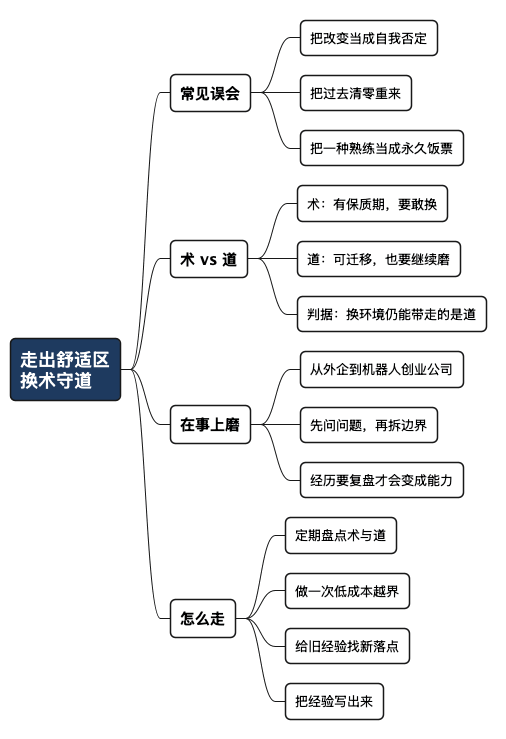

为什么要走出舒适区：换的是术，守的是道
Posted on 一 24 8月 2026 in Journal
| Abstract | 为什么要走出舒适区：换的是术，守的是道 |
|---|---|
| Authors | Walter Fan |
| Category | Journal |
| Version | v1.0 |
| Updated | 2026-08-24 |
| License | CC-BY-NC-ND 4.0 |
我入行那会儿写 C++，后来是 Java，再后来 Python、Go 轮着上。语言换了一茬又一茬，框架更是记不清淘汰过多少个。前几年还当宝贝一样研究的东西，如今简历上都不好意思写。
工作环境也换过：从外企的协作软件，到机器人创业公司，再回到外企做平台和服务。每次看起来都跨了一道门槛，其实并没有从零开始。换掉的是手里的工具，带得走的是分析问题、拆解任务、与人协作的能力。
所以我不太喜欢把“走出舒适区”说成一场壮烈出走。真正要分清的只有两件事：什么该换，什么该守。
- 该换的是术：具体的技术、工具和招式，都有保质期。
- 该守的是道：判断问题的方法、做事的原则、待人的分寸。
一、别把走出去，理解成推倒重来
一提走出舒适区，很多人想到的是硬啃不懂的书、逼自己做讨厌的事，或者干脆把过去清零。结果通常有两种：要么硬撑几天又退回去，要么连多年积累的判断力和手感也一起扔了。
这两种反应，都把改变误解成了自我否定。舒适区不是敌人，把某一种熟练当成永久饭票才是。
一个好厨子换了灶台、食材，甚至换个菜系，还是能做出像样的菜。他真正依靠的是火候、刀工和对味道的判断，不是那口用惯了的锅。锅该换就换，手艺不用砸掉。
职业也是如此。走出去，不是证明过去的自己错了，而是别让过去的成功变成今天的限制。
二、分清“术”和“道”：一张对照表
术和道常常长在一起，不容易分。我的判断很粗糙，但够用：换个环境就大幅贬值的，多半是术；换了环境仍能带走，而且越用越深的，多半是道。
| 维度 | 术（会过时，要敢换） | 道（可迁移，要磨深） |
|---|---|---|
| 编程 | 某门语言、某个框架的 API | 把复杂问题拆开、逐层求解的思路 |
| 做事 | 某套工具、某个流程模板 | 先度量再改进、对结果负责的习惯 |
| 带团队 | 某家外企的管理制度 | 把话说清楚、建立信任的能力 |
| 判断 | 记住某个“标准答案” | 面对不确定性时的取舍能力 |
我写《微服务之道：度量驱动开发》时，落到纸面的不少内容是当时的术，例如具体指标和工具选型。真正的骨架却是“先量出来，再谈改进”。这个念头不属于某门语言：从写 C++ 到写 Go，再到审阅 AI 生成的代码，它仍然管用。
不过，道也不是几条刻在石头上的教条。经验一旦变成“我以前一直这么干”，很快又会退化成术。守道，守的是持续观察、反思和修正的能力，不是守住一套旧答案。
三、真正带得走的东西，都在事上磨
王阳明在《传习录》里说：“人须在事上磨，方立得住。”这句话很适合职业成长。安静时想得明白不难，换个技术、项目或行业，遇到真实的期限、冲突和取舍，还能不能站稳，才见功夫。
从外企进入机器人创业公司，产品、节奏和技术栈都变了。后来再换环境，变化仍然不少。真正帮我跨过去的，不是记住了多少 API，而是几件朴素的事：先确认问题，再拆边界；先拿数据说话，再讨论方案；出了问题先止血，再复盘；带团队时把目标和责任讲明白。
这些本事不耀眼，却有复利。年纪大了，记新 API 未必比年轻人快，但知道该问什么、先做什么、哪里容易出事，这点家底还在增长。它不是资历送的；同一件事重复十年，得到的可能只是十年工龄。只有做过、想过、改过，经历才会变成能力。
禅宗有一句“百尺竿头须进步，十方世界是全身”。我理解，它不是催人不停折腾，而是提醒我们：即使在最熟练、最有把握的地方，也别把当前位置当成终点。
四、守住根，再迈一小步
走出舒适区不必靠一腔热血。下面四步，更容易坚持。
-
定期盘点：哪些是术，哪些是道。 问问自己：哪些本事只在当前公司和项目里值钱，哪些到别处仍然有用？前者别当命根子，后者要继续打磨。
-
做一次低成本的越界。 不必马上辞职转行。可以学一门新语言、接一个陌生模块，或者与不同岗位的人合作。先迈一小步，看看自己缺的究竟是什么。
-
给旧经验找新的落点。 学新东西时，不只问“哪里不同”，也问“哪些底层问题相通”。拆问题、定边界、量结果，这些能力往往可以直接迁移。
-
把经验写出来。 复盘、文档和博客，不只是留记录，也是逼自己解释“当时为什么这样判断”。说不清的经验，常常还只是手感。
今晚就可以做个小练习：拿一张纸，左边写“术”，右边写“道”。给术标上保质期，再给道找一个新的练习场。十分钟足够，比喊一百句“我要改变”有用。
总结：有些东西，正因为改变才得以保留
赫拉克利特借河流谈变化。与其照搬那句流行的“人不能两次踏进同一条河流”，不如记住一个更贴近原意的说法：同一条河里，流过的是不同的水。 斯坦福哲学百科对此有个很好的概括：有些事物，正因为不断变化，才得以保持自身。
职业成长也是如此。换语言、工具和环境，不是背叛过去；恰恰是让多年积累的判断力，在新的问题里继续生长。换的是术，磨的是道。人不必把自己连根拔起，但也别守着一口旧锅，等世界替你关火。
全文思维导图

@startmindmap
<style>
mindmapDiagram {
node {
BackgroundColor #F8F9FA
RoundCorner 10
Padding 10
FontSize 13
}
:depth(0) {
BackgroundColor #1E3A5F
FontColor white
FontSize 18
FontStyle bold
}
:depth(1) {
FontSize 15
FontStyle bold
}
:depth(2) {
FontSize 13
}
}
</style>
* 走出舒适区\n换术守道
** 常见误会
*** 把改变当成自我否定
*** 把过去清零重来
*** 把一种熟练当成永久饭票
** 术 vs 道
*** 术：有保质期，要敢换
*** 道：可迁移，也要继续磨
*** 判据：换环境仍能带走的是道
** 在事上磨
*** 从外企到机器人创业公司
*** 先问问题，再拆边界
*** 经历要复盘才会变成能力
** 怎么走
*** 定期盘点术与道
*** 做一次低成本越界
*** 给旧经验找新落点
*** 把经验写出来
@endmindmap
本作品采用知识共享署名-非商业性使用-禁止演绎 4.0 国际许可协议进行许可。 欢迎在我的个人网站 https://www.fanyamin.com 访问原文并评论。